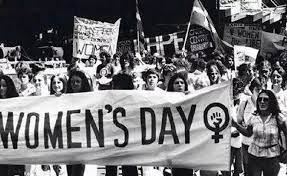
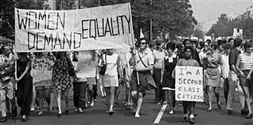
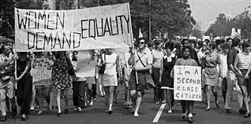

开始于19世纪下半叶，延续至20世纪初
19世纪末是妇女解放运动的第一次浪潮，争论的焦点是要求性别包括男女之间的生命全历程平等，也就是两性的平等， 也要求公民权、政治权利，反对贵族特权、一夫多妻，强调男女在智力上和能力上是没有区别的。 最重要的目标是要争取家庭劳动与社会劳动等价、政治权利同值，往往被称作“女权运动”。
重要事件：三八妇女节诞生
 

开始于20世纪60年代，延续至70年代
女性主义的第二次浪潮从20世纪60年代－70年代开始。人们认为，第二次妇女解放运动最早也起源于美国。这次运动一直持续到80年代。 其基调是要强调两性间分工的自然性并消除男女同工不同酬的现象。 要求忽略把两性的差别看成是在两性社会关系中，女性附属于男性的基础的观点。要求分领域对相应适可公众开放，等等。
始于1990年代，延续至今
第三次女权主义运动带来的另外一个结果，就是对于性别研究，女性主义的学术研究兴起。因此，也出现了形形色色的女性主义流派。 人们在父权意识形态中形成的概念使得她们从男权的角度来描述这个世界，并且把这种描述混同于真理，认为是天经地义的。 而女权主义者对这些人们习以为常的概念提出了挑战。尽管流派众多，但基本点是争取两性寿终平权，彻底消除女性受歧视剥削压迫乃至误对的坏状况。